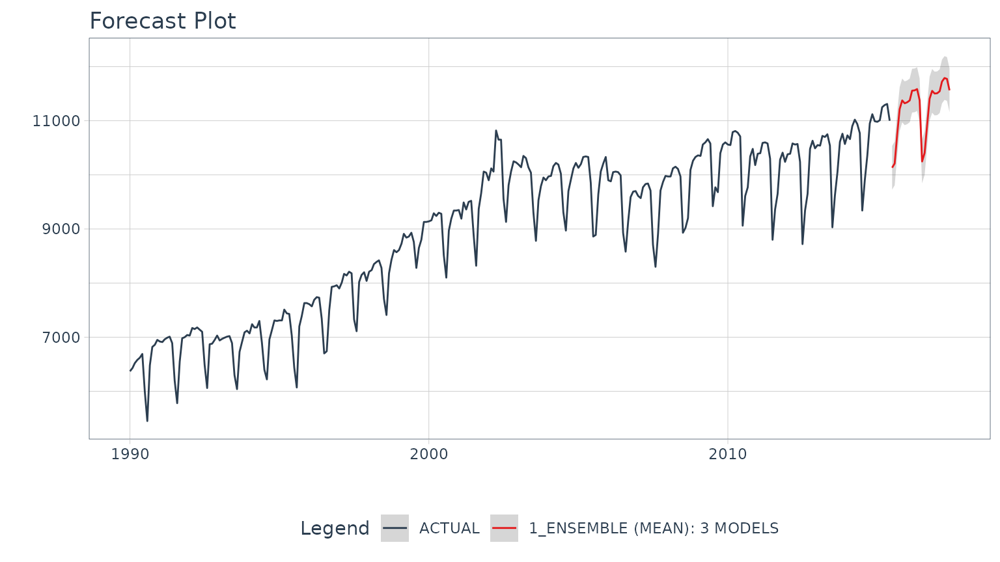

Getting Started with Modeltime Ensemble
Source:vignettes/getting-started-with-modeltime-ensemble.Rmd
getting-started-with-modeltime-ensemble.RmdEnsemble Algorithms for Time Series Forecasting with Modeltime
A modeltime extension that that implements
ensemble forecasting methods including model
averaging, weighted averaging, and stacking. Let’s go through a guided
tour to kick the tires on modeltime.ensemble.

Time Series Ensemble Forecasting Example
We’ll perform the simplest type of forecasting: Using a simple average of the forecasted models.
Note that modeltime.ensemble has capabilities for more
sophisticated model ensembling using:
-
Weighted Averaging
- Stacking using an Elastic Net regression model (meta-learning)
Libraries
Load libraries to complete this short tutorial.
# Time Series ML
library(tidymodels)
library(modeltime)
library(modeltime.ensemble)
# Core
library(tidyverse)
library(timetk)
interactive <- FALSECollect the Data
We’ll use the m750 dataset that comes with
modeltime.ensemble. We can visualize the dataset.
m750 %>%
plot_time_series(date, value, .color_var = id, .interactive = interactive)
Perform Train / Test Splitting
We’ll split into a training and testing set.
splits <- time_series_split(m750, assess = "2 years", cumulative = TRUE)
splits %>%
tk_time_series_cv_plan() %>%
plot_time_series_cv_plan(date, value, .interactive = interactive)
Modeling
Once the data has been collected, we can move into modeling.
Recipe
We’ll create a Feature Engineering Recipe that can be applied to the data to create features that machine learning models can key in on. This will be most useful for the Elastic Net (Model 3).
recipe_spec <- recipe(value ~ date, training(splits)) %>%
step_timeseries_signature(date) %>%
step_rm(matches("(.iso$)|(.xts$)")) %>%
step_normalize(matches("(index.num$)|(_year$)")) %>%
step_dummy(all_nominal()) %>%
step_fourier(date, K = 1, period = 12)
recipe_spec %>% prep() %>% juice()#> # A tibble: 282 × 42
#> date value date_index.num date_year date_half date_quarter date_month
#> <date> <dbl> <dbl> <dbl> <int> <int> <int>
#> 1 1990-01-01 6370 -1.72 -1.66 1 1 1
#> 2 1990-02-01 6430 -1.71 -1.66 1 1 2
#> 3 1990-03-01 6520 -1.70 -1.66 1 1 3
#> 4 1990-04-01 6580 -1.69 -1.66 1 2 4
#> 5 1990-05-01 6620 -1.67 -1.66 1 2 5
#> 6 1990-06-01 6690 -1.66 -1.66 1 2 6
#> 7 1990-07-01 6000 -1.65 -1.66 2 3 7
#> 8 1990-08-01 5450 -1.64 -1.66 2 3 8
#> 9 1990-09-01 6480 -1.62 -1.66 2 3 9
#> 10 1990-10-01 6820 -1.61 -1.66 2 4 10
#> # ℹ 272 more rows
#> # ℹ 35 more variables: date_day <int>, date_hour <int>, date_minute <int>,
#> # date_second <int>, date_hour12 <int>, date_am.pm <int>, date_wday <int>,
#> # date_mday <int>, date_qday <int>, date_yday <int>, date_mweek <int>,
#> # date_week <int>, date_week2 <int>, date_week3 <int>, date_week4 <int>,
#> # date_mday7 <int>, date_month.lbl_01 <dbl>, date_month.lbl_02 <dbl>,
#> # date_month.lbl_03 <dbl>, date_month.lbl_04 <dbl>, …Modeltime Workflow for Ensemble Forecasting
With the models created, we can can create an Ensemble Average Model using a simple Mean Average.
Step 1 - Create a Modeltime Table
Create a Modeltime Table using the modeltime
package.
m750_models <- modeltime_table(
wflw_fit_arima,
wflw_fit_prophet,
wflw_fit_glmnet
)
m750_models#> # Modeltime Table
#> # A tibble: 3 × 3
#> .model_id .model .model_desc
#> <int> <list> <chr>
#> 1 1 <workflow> ARIMA(0,1,1)(0,1,1)[12]
#> 2 2 <workflow> PROPHET
#> 3 3 <workflow> GLMNETStep 2 - Make an Ensemble
Then use ensemble_average() to turn that Modeltime Table
into a Modeltime Ensemble. This is a
fitted ensemble specification containing the ingredients to
forecast future data and be refitted on data sets using the 3
submodels.
ensemble_fit <- m750_models %>%
ensemble_average(type = "mean")
ensemble_fit#> ── Modeltime Ensemble ───────────────────────────────────────────
#> Ensemble of 3 Models (MEAN)
#>
#> # Modeltime Table
#> # A tibble: 3 × 3
#> .model_id .model .model_desc
#> <int> <list> <chr>
#> 1 1 <workflow> ARIMA(0,1,1)(0,1,1)[12]
#> 2 2 <workflow> PROPHET
#> 3 3 <workflow> GLMNETStep 3 - Forecast! (the Test Data)
To forecast, just follow the Modeltime Workflow.
# Calibration
calibration_tbl <- modeltime_table(
ensemble_fit
) %>%
modeltime_calibrate(testing(m750_splits))
# Forecast vs Test Set
calibration_tbl %>%
modeltime_forecast(
new_data = testing(m750_splits),
actual_data = m750
) %>%
plot_modeltime_forecast(.interactive = interactive)
Step 4 - Refit on Full Data & Forecast Future
Once satisfied with our ensemble model, we can
modeltime_refit() on the full data set and forecast forward
gaining the confidence intervals in the process.
refit_tbl <- calibration_tbl %>%
modeltime_refit(m750)
refit_tbl %>%
modeltime_forecast(
h = "2 years",
actual_data = m750
) %>%
plot_modeltime_forecast(.interactive = interactive)
This was a very short tutorial on the simplest type of forecasting, but there’s a lot more to learn.
Take the High-Performance Forecasting Course
Become the forecasting expert for your organization
High-Performance Time Series Course
Time Series is Changing
Time series is changing. Businesses now need 10,000+ time series forecasts every day. This is what I call a High-Performance Time Series Forecasting System (HPTSF) - Accurate, Robust, and Scalable Forecasting.
High-Performance Forecasting Systems will save companies by improving accuracy and scalability. Imagine what will happen to your career if you can provide your organization a “High-Performance Time Series Forecasting System” (HPTSF System).
How to Learn High-Performance Time Series Forecasting
I teach how to build a HPTFS System in my High-Performance Time Series Forecasting Course. You will learn:
-
Time Series Machine Learning (cutting-edge) with
Modeltime- 30+ Models (Prophet, ARIMA, XGBoost, Random Forest, & many more) -
Deep Learning with
GluonTS(Competition Winners) - Time Series Preprocessing, Noise Reduction, & Anomaly Detection
- Feature engineering using lagged variables & external regressors
- Hyperparameter Tuning
- Time series cross-validation
- Ensembling Multiple Machine Learning & Univariate Modeling Techniques (Competition Winner)
- Scalable Forecasting - Forecast 1000+ time series in parallel
- and more.
Become the Time Series Expert for your organization.